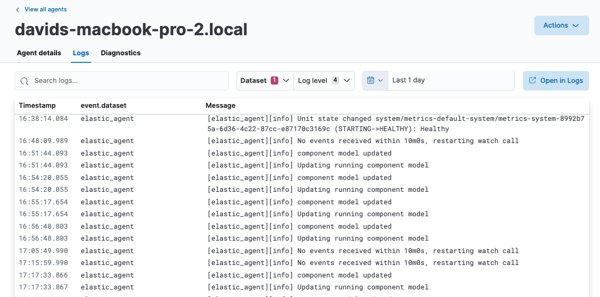

Monitor Elastic Agents
editFleet provides built-in capabilities for monitoring your fleet of Elastic Agents. In Fleet, you can:
- View agent status overview
- View details for an agent
- View agent activity
- View agent logs
- Collect Elastic Agent diagnostics
- View the Elastic Agent metrics dashboard
- Change Elastic Agent monitoring settings
- Send Elastic Agent monitoring data to a remote Elasticsearch cluster
- Enable alerts and ML jobs based on Fleet and Elastic Agent status
Agent monitoring is turned on by default in the agent policy unless you turn it off. Want to turn off agent monitoring to stop collecting logs and metrics? See Change Elastic Agent monitoring settings.
Want to receive an alert when your Elastic Agent health status changes? Refer to Enable alerts and ML jobs based on Fleet and Elastic Agent status and our alerting example.
For more detail about how agents communicate their status to Fleet, refer to Elastic Agent health status.
View agent status overview
editTo view the overall status of your Fleet-managed agents, in Kibana, go to Management → Fleet → Agents.
Elastic Agents can have the following statuses:
Healthy |
Elastic Agents are enrolled and checked in. There are no agent policy updates or automatic agent binary updates in progress, but the agent binary may still be out of date. Elastic Agents continuously check in to the Fleet Server for required updates. |
Unhealthy |
Elastic Agents have errors or are running in a degraded state. An agent will be reported as |
Updating |
Elastic Agents are updating the agent policy, updating the binary, or enrolling or unenrolling from Fleet. |
Offline |
Elastic Agents have stayed in an unhealthy status for a period of time. Offline agent’s API keys remain valid. You can still see these Elastic Agents in the Fleet UI and investigate them for further diagnosis if required. |
Inactive |
Elastic Agents have been offline for longer than the time set in your inactivity timeout. These Elastic Agents are valid, but have been removed from the main Fleet UI. |
Unenrolled |
Elastic Agents have been manually unenrolled and their API keys have been removed from the system. You can unenroll an offline Elastic Agent using Elastic Agent actions if you determine it’s offline and no longer valid. These agents need to re-enroll in Fleet to be operational again. |
The following diagram shows the flow of Elastic Agent statuses:

To filter the list of agents by status, click the Status dropdown and select one or more statuses.

For advanced filtering, use the search bar to create structured queries
using Kibana Query Language. For example, enter
local_metadata.os.family : "darwin" to see only agents running on macOS.
View details for an agent
editIn Fleet, you can access the detailed status of an individual agent and the integrations that are associated with it through the agent policy.
- In Fleet, open the Agents tab.
- In the Host column, click the agent’s name.
On the Agent details tab, the Overview pane shows details about the agent and its performance, including its memory and CPU usage, last activity time, and last checkin message. To access metrics visualizations, you can also View the Elastic Agent metrics dashboard.

The Integrations pane shows the status of the integrations that have been added to the agent policy. Expand any integration to view its health status. Any errors or warnings are displayed as alerts.

To gather more detail about a particular error or warning, from the Actions menu select View agent JSON. The JSON contains all of the raw agent data tracked by Fleet.
Currently, the Integrations pane shows the health status only for agent inputs. Health status is not yet available for agent outputs.
View agent activity
editYou can view a chronological list of all operations performed by your Elastic Agents.
On the Agents tab, click Agent activity. All agent operations are shown, beginning from the most recent, including any in progress operations.

View agent logs
editWhen Fleet reports an agent status like Offline or Unhealthy, you might
want to view the agent logs to diagnose potential causes. If agent monitoring
is configured to collect logs (the default), you can view agent logs in Fleet.
- In Fleet, open the Agents tab.
- In the Host column, click the agent’s name.
- On the Agent details tab, verify that Monitor logs is enabled. If it’s not, refer to Change Elastic Agent monitoring settings.
-
Click the Logs tab.

On the Logs tab you can filter, search, and explore the agent logs:
- Use the search bar to create structured queries using Kibana Query Language.
-
Choose one or more datasets to show logs for specific programs, such as Filebeat or Fleet Server.

- Change the log level to filter the view by log levels. Want to see debugging logs? Refer to Change the logging level.
- Change the time range to view historical logs.
- Click Open in Logs to tail agent log files in real time. For more information about logging, refer to Tail log files.
Change the logging level
editThe logging level for monitored agents is set to info by default. You can
change the agent logging level, for example, to turn on debug logging remotely:
-
After navigating to the Logs tab as described in View agent logs, scroll down to find the Agent logging level setting.

-
Select an Agent logging level:
errorLogs errors and critical errors.
warningLogs warnings, errors, and critical errors.
infoLogs informational messages, including the number of events that are published. Also logs any warnings, errors, or critical errors.
debugLogs debug messages, including a detailed printout of all events flushed. Also logs informational messages, warnings, errors, and critical errors.
- Click Apply changes to apply the updated logging level to the agent.
Collect Elastic Agent diagnostics
editFleet provides the ability to remotely generate and gather an Elastic Agent’s diagnostics bundle.
An agent can gather and upload diagnostics if it is online in a Healthy or Unhealthy state.
To download the diagnostics bundle for local viewing:
- In Fleet, open the Agents tab.
- In the Host column, click the agent’s name.
- Click the Diagnostics tab.
-
Click the Request diagnostics .zip button.

Any in-progress or previously collected bundles for the Elastic Agent will be listed on this page.
Note that the bundles are stored in Elasticsearch and are removed automatically after 7 days. You can also delete any previously created bundle by clicking the trash can icon.
View the Elastic Agent metrics dashboard
editWhen agent monitoring is configured to collect metrics (the default), you can use the [Elastic Agent] Agent metrics dashboard in Kibana to view details about Elastic Agent resource usage, event throughput, and errors. This information can help you identify problems and make decisions about scaling your deployment.
To view agent metrics:
- In Fleet, open the Agents tab.
- In the Host column, click the agent’s name.
- On the Agent details tab, verify that Monitor metrics is enabled. If it’s not, refer to Change Elastic Agent monitoring settings.
-
Click View more agent metrics to navigate to the [Elastic Agent] Agent metrics dashboard.

The dashboard uses standard Kibana visualizations that you can extend to meet your needs.
Change Elastic Agent monitoring settings
editAgent monitoring is turned on by default in the agent policy. To change agent monitoring settings for all agents enrolled in a specific agent policy:
- In Fleet, open the Agent policies tab.
- Click the agent policy to edit it, then click Settings.
- Under Agent monitoring, deselect (or select) one or both of these settings: Collect agent logs and Collect agent metrics.
- Save your changes.
To turn off agent monitoring when creating a new agent policy:
- In the Create agent policy flyout, expand Advanced options.
- Under Agent monitoring, deselect Collect agent logs and Collect agent metrics.
- When you’re done configuring the agent policy, click Create agent policy.
Send Elastic Agent monitoring data to a remote Elasticsearch cluster
editYou may want to store all of the health and status data about your Elastic Agents in a remote Elasticsearch cluster, so that it’s separate and independent from the deployment where you use Fleet to manage the agents.
To do so, follow the steps in Remote Elasticsearch output. After the new output is configured, follow the steps to update the Elastic Agent policy and make sure that the Output for agent monitoring setting is enabled. Elastic Agent monitoring data will use the remote Elasticsearch output that you configured.
Enable alerts and ML jobs based on Fleet and Elastic Agent status
editYou can access the health status of Fleet-managed Elastic Agents and other Fleet settings through internal Fleet indices. This enables you to leverage various applications within the Elastic Stack that can be triggered by the provided information. For instance, you can now create alerts and machine learning (ML) jobs based on these specific fields. Refer to the Alerting documentation or see the example on this page to learn how to define rules that can trigger actions when certain conditions are met.
This functionality allows you to effectively track an agent’s status, and identify scenarios where it has gone offline, is experiencing health issues, or is facing challenges related to input or output.
The following datastreams and fields are available.
- Datastream
-
metrics-fleet_server.agent_status-defaultThis data stream publishes the number of Elastic Agents in various states.
Fields
-
@timestamp -
fleet.agents.total- A count of all agents -
fleet.agents.enrolled- A count of all agents currently enrolled -
fleet.agents.unenrolled- A count of agents currently unenrolled -
fleet.agents.healthy- A count of agents currently healthy -
fleet.agents.offline- A count of agents currently offline -
fleet.agents.updating- A count of agents currently in the process of updating -
fleet.agents.unhealthy- A count of agents currently unhealthy -
fleet.agents.inactive- A count of agents currently inactive
Other fields regarding agent status, based on input and output health, are currently under consideration for future development.
-
- Datastream
-
metrics-fleet_server.agent_versions-defaultThis index publishes a separate document for each version number and a count of enrolled agents only.
Fields
-
@timestamp -
fleet.agent.version- A keyword field containing the version number -
fleet.agent.count- A count of agents on the specified version
-
Example: Enable an alert for offline Elastic Agents
editYou can set up an alert to notify you when one or more Elastic Agents goes offline:
- In Kibana, navigate to Management > Stack Management > Rules.
- Click Create rule.
- Select Elasticsearch query as the rule type.
-
Choose a name for the rule, for example
Elastic Agent status. - Select KQL or Lucene as the query type.
-
Select
DATA VIEW metrics-*as the data view. -
Define your query, for example:
fleet.agents.offline >= 1. -
Set the alert group, threshold, and time window. For example:
-
WHEN:
count() -
OVER:
all documents -
IS ABOVE:
0 -
FOR THE LAST
5 minutesThis will generate an alert when one or more agents are reported by the
fleet.agents.offlinefield over the last five minutes to be offline.
-
WHEN:
-
Set the number of documents to send, for example:
- SIZE: 100
- Set Check every to the frequency at which the rule condition should be evaluated. The default setting is one minute.
-
Select an action to occur when the rule conditions are met. For example, to set the alert to send an email when an alert occurs, select the Email connector type and specify:
-
Email connector:
Elastic-Cloud-SMPT -
Action frequency:
For each alertandOn check intervals -
Run when:
Query matched - To: <the recipient email address>
- Subject: <the email subject line>
-
Email connector:
- Click Save.
The new rule will be enabled and an email will be sent to the specified recipient when the alert conditions are met.
From the Rules page you can select the rule you created to enable or disable it, and to view the rule details including a list of active alerts and an alert history.